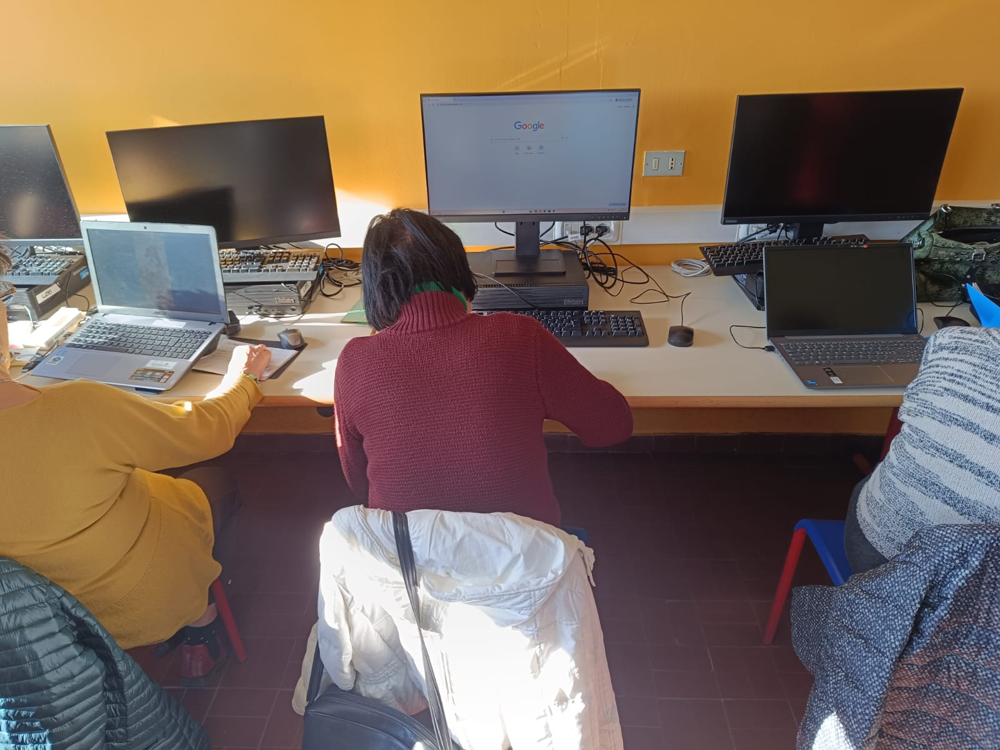
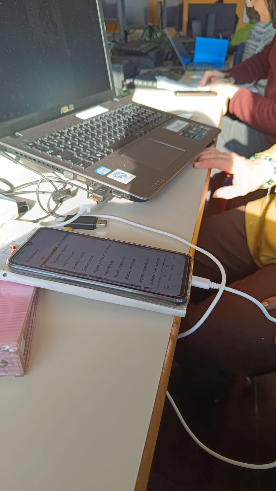
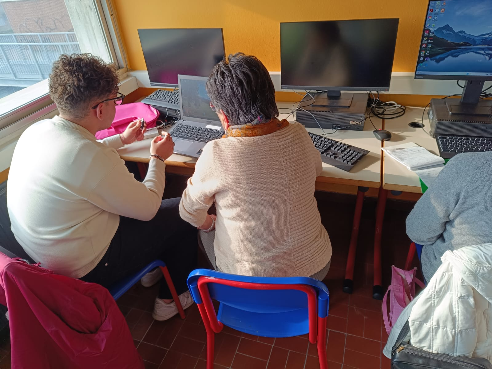
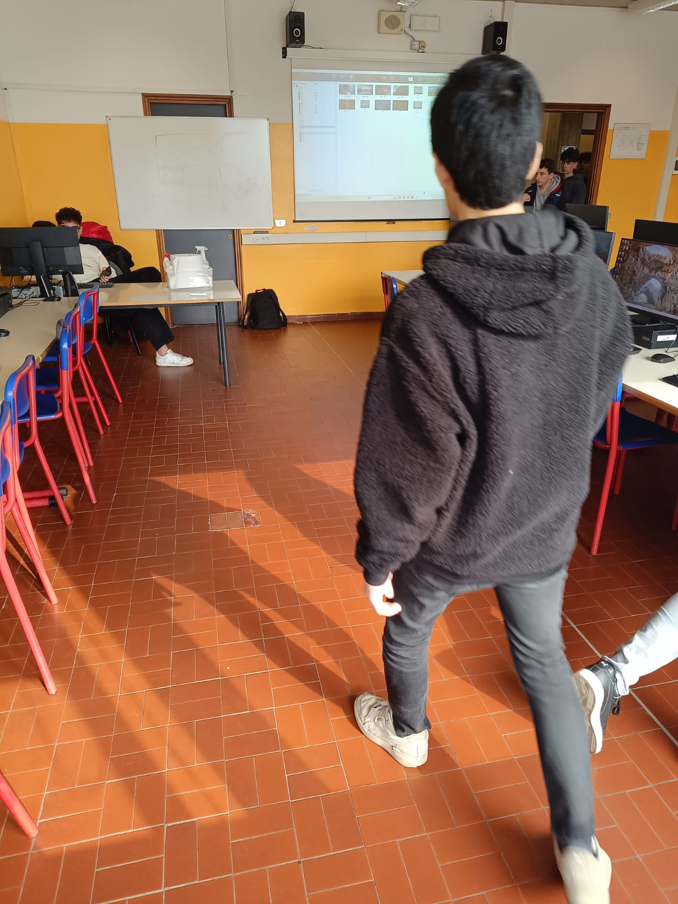
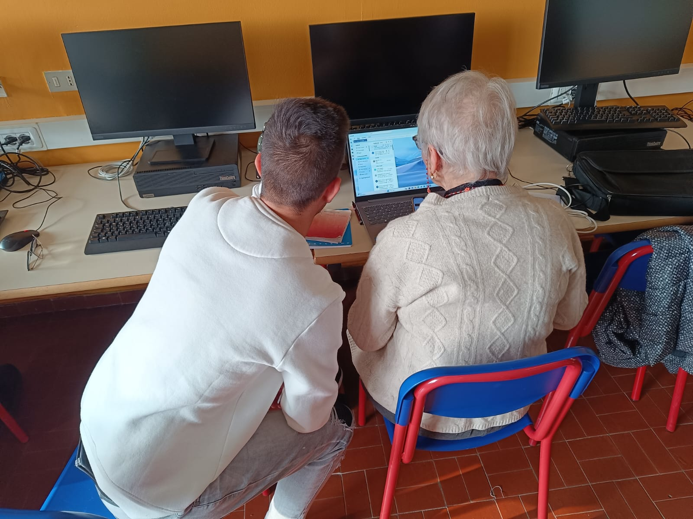

Questo è stato il nostro primo incontro di FSL con il Prof. Vario che ci ha spiegato cosa fosse il FSL, di cosa si trattava, come fosse il lavoro e tutti argomenti di questo genere.
L'incontro si e' tenuto su meet in videolezione con slide e schemi che ci spiegava come si
dividesse il lavoro.
alla fine dell'incontro abbiamo dovuto completare un test su tutto quello che ci avevano spiegato
e quello sarebbe stato il primo voto di FSL.
Riflessioni personali:
penso che questo incontro sia servito anche perche ho capito molte più cose
sul lavoro e sui miei dubbi riguardanti il FSL.
Poi devo dire che il Prof. Vario è stato molto chiaro grazie alle sue slide
e alla voglia che ci metteva a fare tutto ciò.
Per me non è stata per niente un'attività noiosa, anzi, l'ho trovata molto interessante e utile per capire meglio come funziona il mondo del lavoro.
Mi ha dato una prospettiva più chiara su cosa aspettarmi e su come affrontare situazioni lavorative in futuro.
Inoltre, penso che questo incontro sia stato un'ottima opportunità per riflettere su come affrontare il mondo del lavoro in modo più consapevole.
Mi ha aiutato a capire l'importanza di avere una buona preparazione e di essere sempre pronti ad adattarsi a nuove situazioni.
Credo che esperienze come questa siano fondamentali per noi studenti, perché ci permettono di acquisire una visione più chiara di ciò che ci aspetta dopo la scuola.
È stato anche interessante vedere come il lavoro di squadra e la comunicazione siano aspetti cruciali in qualsiasi ambiente lavorativo.
In definitiva, ritengo che questo incontro abbia rappresentato un passo importante nel mio percorso di crescita personale e professionale.
il Monta & Smonta è stato il secondo progetto di FSL il quale consisteva nel smontare
per poi rimontare un computer.
Una volta aperto il case ti trovi davanti molti componenti poi essendo computer vecchi
molti non funzionavano ma mi sono molto divertito a smontare e rimontare i PC anche
perche lo avevo gia fatto in precedenza con il mio computer fisso a casa (solo montarlo) ed
è stata la mia seconda volta ad avere a che fare con i componenti di un PC
e devo dire che è stata un'esperienza molto interessante e formativa.
Ho imparato a riconoscere i vari componenti hardware, come la scheda madre,
il processore, l'alimentatore e i dischi rigidi (purtroppo a me mancavano le RAM).
Inoltre, ho capito meglio come questi componenti lavorano insieme per far funzionare un computer.
Riflessioni personali:
penso che questa attivita sia stata molto formativa per noi soprattutto per chi, un computer, non lo aveva mai
visto da vicino.
È stato molto interessante vedere come ogni pezzo si incastri perfettamente per creare un sistema funzionante.
Ritengo che attività pratiche come questa siano fondamentali per consolidare le conoscenze teoriche e per sviluppare competenze utili nel mondo del lavoro.
Infine, è stata un'esperienza molto positiva che mi ha arricchito sia dal punto di vista tecnico che personale.


Per concludere abbiamo i Nonni Smart che più che un lavoro di FSL è stato un
vero e proprio percorso che ci ha offerto il Bus Connect della durata di 5 settimane, un'ora e mezza
a settimana.
Il nostro compito era di girare i nostri ruoli quotidiani, ovvero fare noi i professori e gli anziani gli alunni.
In base alle richieste degli anziani (cose che volevano imparare a fare) ci siamo divisi il lavoro per le diverse settimane
e siamo riusciti a concludere tutti i programmi che ci avevano chiesto all'inizio e durante.
Cosa ne penso:
Penso che questa attivita sia stata di grande aiuto sia per noi che per gli anziani,
cambiare i ruoli, dimostrare che anche se siamo adolescenti possiamo essere capaci di insegnare
qualcosa a qualcuno, che siamo capaci di spiegare a qualcuno qualcosa avendo imparato nel corso di
questi anni qualcosa.
Mi sono sentito molto fiero vedere gli anziani imparare e acquisire nuove competenze che li hanno aiutati a sentirsi più sicuri nell'uso della tecnologia.
Inoltre, questa esperienza mi ha insegnato l'importanza della pazienza e della comunicazione efficace, qualità fondamentali non solo per insegnare, ma anche per lavorare insieme.
Credo che attività come questa siano un'opportunità unica per crescere sia a livello personale che professionale.
Infine, penso che questa attività sia stata estremamente utile e significativa.
Esperienze come questa ci insegnano l'importanza della collaborazione, della pazienza e della capacità di adattarsi a diverse situazioni (come spiegato dal Prof. Vario nell'UST).
Sono convinto che attività di questo tipo siano fondamentali per prepararci al futuro e per sviluppare competenze che saranno utili in qualsiasi ambito lavorativo.




